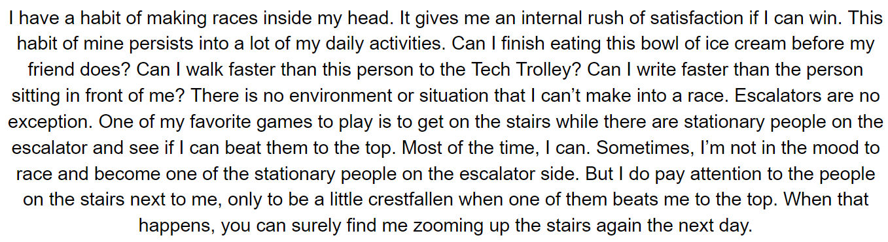

The goal of this project is to design an intervention for a particular transition space where that is defined as any space, physical or mental, that a transition may occur. The intervention should serve a number of purposes, which may include improving, probing, or challenging the space.

During the initial phases of the project, we brainstormed improvements for all three choices of transition spaces we had to choose from: escalators, Starbucks stores, and crosswalks.

We chose to explore escalators not only because they are obviously in the business of constant transitioning, but also because of the variety of complex interactions that can occur there. Specifically, we are engaging with escalators situated within MARTA stations to study the dynamic of a transitional space within a transitional space.

Doraville, Midtown, Arts Center, and North Ave.: each of us chose a different MARTA station to explore. With each station, we were looking to examine what ways we could include principles such as autonomy and choice within our design intervention.
I studied the Doraville MARTA station.

We recognized the power of the individual and shared experiences that occur there, so we wanted to design a kit of parts to honor those singular and collective perspectives.

The kit of parts we designed consists of four items: environmental projections, narrative displays, dimensional alternations, and topographical augmentations. True to the nature of the kit of parts, each of these interventions was meant to be interchangeable across all four escalators, and across all escalators in general.

Additionally, each of us wrote a story about our personal experiences with escalators as a means of creating interventions which could leverage others’ individual experience. This is mine:
And from that story I created my component of the kit of parts: the narrative display.


We progressed with our interventions, we recognized that there was a need for practicality. We wanted to present a solution that could be implemented in a timely and economical manner. All of us reflected on our kit of parts and decided that it would be beneficial we narrowed down our four solutions to a single solution which could be easily adapted to a multitude of escalators.
After careful deliberation, we decided to focus on projections as a design intervention. Our precedents are works of public art, performance, and graffiti.

With these inspirations, we created projections which engage the shared and individual experiences of the MARTA escalators.